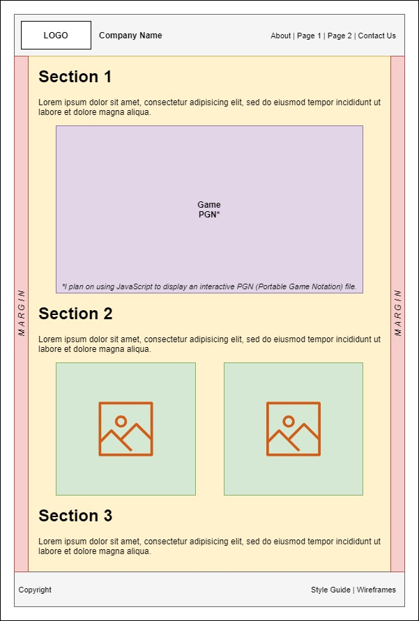
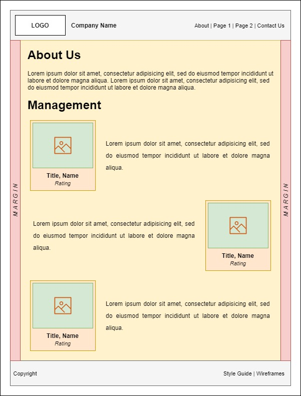
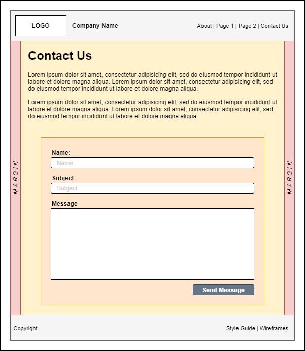
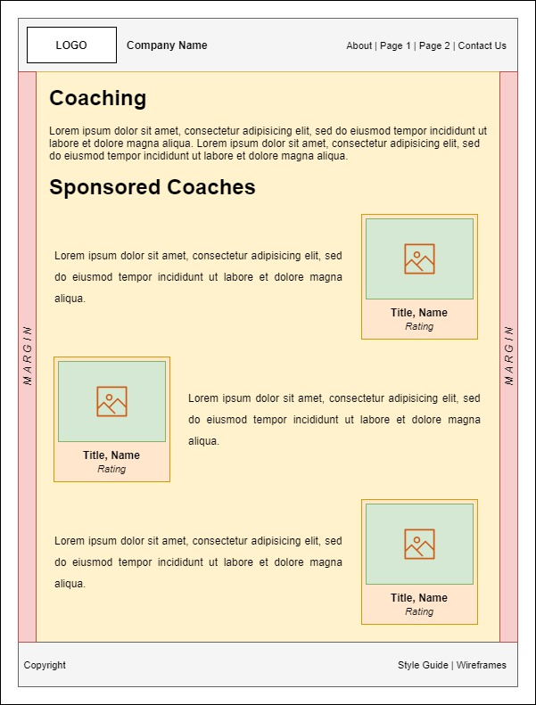
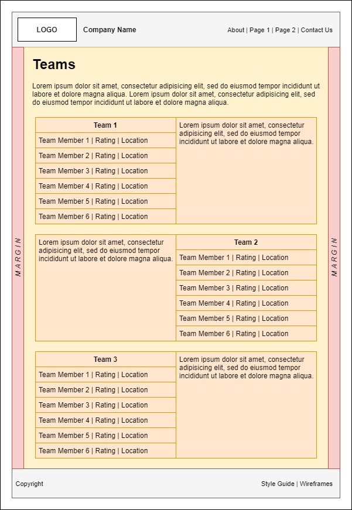

Wireframes
Home
I spent a few hours trying to figure out how to implement the Game PGN feature, but came up empty. In the end, I made some chess diagrams into images and used those. As I was designing the home page wireframe, I decided it looked better if I stacked the two images on top of each other. Later, I decided I wanted an extra heading at the very top of the page to make it clear that Sections 1-3 were only announcements. I decided that the page looked better with a 1px border between each announcement. It broke up the text into more manageable bites.
About
The final page ended up looking pretty close to what I envisioned in the wireframe. I did end up adding a subheading for "Our Purpose" because I thought it looked nicer. I put in some extra left and right margin to the "Management" section, as well.
Contact Us
Of the five wireframes I created, this one is the closest to the final product. Perhaps the biggest difference between this wireframe and the actual page is the size of the textarea, but that is not a big deal.
Coaching
When I initially created the wireframe for this page, I didn't realize that it looked so similar to the About Us page. After I noticed, I decided to change the layout of the page. Instead of alternating the card placement, I shoved them all to the right. I also decided to italicize the description text. I think both changes help give this page a distinct look.
Teams
This is the wireframe that I struggled with the most in making. I couldn't figure out how to make tables in draw.io. I think I got it, more or less, after about an hour of trial and error. The page itself looks pretty close to this except that I added two subheadings called "Joining a Team" and "Make Your Own Team". I also expanded the number of teams from 3 to 6 to fit with what I wrote in the About Us page.